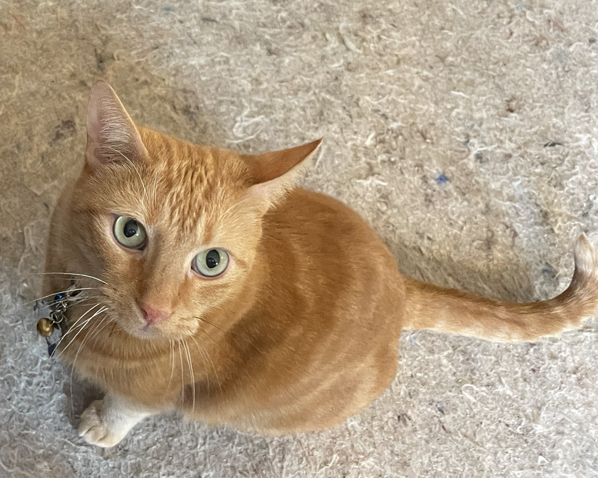
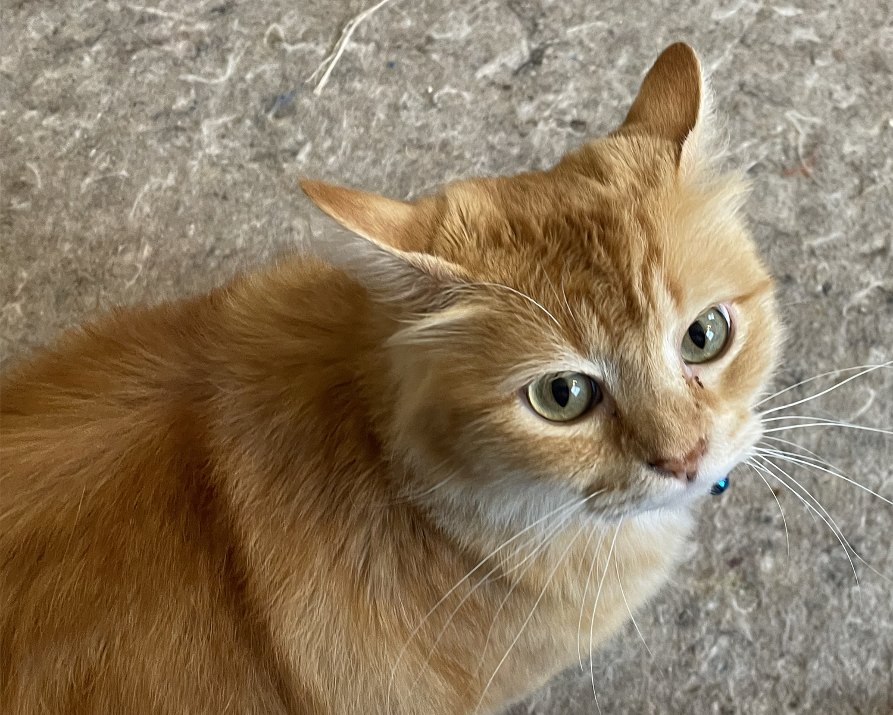

Hi! I'm Traci.
Hobbies
My hobbies include
- Skiing (Fall is my favorite time of year because it means that I only have to wait a couple more months until winter.)
- Reading
- Aerial Arts - Aerial arts is a relatively new sport and is an odd mixture of flexibility, yoga, dance and tumbling, all on different apparatus. Some of the events under aerial arts include silks, lyra and acrobatics. I take classes at Monarca in Flight Aerial Arts Studio. Below is an example of some dancers doing aerial arts:

Career Goals
Currently, I'm a print production specialist at a marketing firm in Virginia. I have an M.A. from the University of Baltimore in publication design and I'm working on another graduate degree in political communication from the University of Florida. Politics and news/current events have always fascinated me and I love that I can combine it with my strong foundation in design and communication.
Interests
Like most people, my interests are diverse.
- I'm a Vegetarian
First and foremost, I'm a vegetarian. Eighteen years ago I gave up meat and seafood, (anything with a face) for ethical reasons and I've never looked back. Besides allowing me to sleep easier at night and look myself in the mirror in the morning, being a vegetarian is great for my health. My doctor is a huge fan of my plant-based diet and flat-out told me she wished her other patients were plant-based as well.
- and an Animal Lover
Loving and caring for animals goes hand-in-hand with being a vegetarian. I have two cats:
- Aubrey is an American domestic (mixed breed).

- Jasper is a dwarf Maine Coon.

While Aubrey and Jasper are both marmalade tabbies, their personalities couldn't be more different. Jasper is an extrovert and Aubrey is an introvert.
- When I'm not in school, I'm very Politically Active. (Hence, the graduate degree in political communications). I'm looking forward to the next election because I havn't been canvassing for a while and I miss discussing politics with voters.